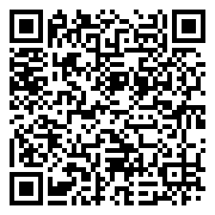

Doe para o SECRI
Sua doação mantém gratuitos os projetos de arte, esporte e qualificação para crianças, adolescentes e famílias do Território do Bem, em Vitória/ES. Doe por Pix, transferência bancária ou com os créditos da Nota Premiada Capixaba.
Doação financeira
Pix

Chave (CNPJ)
31.795.321/0001-53
Titular: Serviço de Engajamento Comunitário - SECRI
Pix copia e cola
00020126360014br.gov.bcb.pix0114317953210001535204000053039865802BR5905SECRI6007VITORIA62070503***6304C148
No app do banco, escolha Pix → Pix copia e cola e informe o valor.
Transferência bancária
- Banco
- SICOOB (756)
- Agência
- 3010
- Conta corrente
- 56729-9
- CNPJ
- 31.795.321/0001-53
- Titular
- Serviço de Engajamento Comunitário - SECRI
Nota Premiada Capixaba
Doe seus créditos do programa estadual sem gastar nada. Basta pedir o CPF na nota a cada compra e indicar o SECRI como instituição beneficiada.
- Cadastre-se no site do programa
- Escolha Serviço de Engajamento Comunitário - SECRI, CNPJ 31.795.321/0001-53
- Inclua seu CPF na nota em qualquer compra
Para onde vai sua doação
As doações sustentam os oito projetos gratuitos do SECRI e o acompanhamento das famílias atendidas no Território do Bem.
Exemplos do que cada valor garante: a confirmar
A aplicação dos recursos é publicada todo ano no Relatório de Atividades e no Balanço Patrimonial, disponíveis em Transparência.
Recibo e benefício fiscal
Recibo da doação
Envie o comprovante com seu nome e CPF ou CNPJ para financeiro@secri.org.br.
Prazo e forma de emissão do recibo: a confirmar
Dedução no Imposto de Renda
Possibilidade de dedução para pessoas físicas e jurídicas: a confirmar
Empresas que queiram apoiar por leis de incentivo podem falar com o setor financeiro.
Doação de materiais
Itens sempre bem-vindos para as atividades e para as famílias atendidas. Entregas na sede, na Rua Tenente Setúbal, 395, São Benedito.
- Alimentos não perecíveis
- Material escolar
- Produtos de higiene e limpeza
- Materiais artísticos para oficinas
- Instrumentos musicais
Antes de trazer uma doação maior, ligue para (27) 99849-9507 para combinar o recebimento.